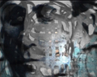

Archives 2008-1
Actualités / blog des sites
7/6/2008
Pierre Etaix
Quelquefois, ArtRéalité doit déborder un peu
de son sujet. Pas tellement en l'occurrence.
Pierre Etaix, tout le monde connait ce nom
et peu ont vu son travail. La raison en est simple : il n'a pas le droit
de diffuser ses oeuvres filmées, même gratuitement, pour des raisons
d'ordre juridique.
Une pétition circule donc sur le web, signée
par de grands noms et d'autres moins célèbres, parce que comme l'écrit une
signataire, une infirmière, il est très urgent de combattre la stupidité
dans ce monde. On pourrait ajouter que cette sottise absurde se révèle à
la mesure des faits, de la réalité et là nous sommes bien dans notre
sujet : art et réalité.
De plus une telle mésaventure peut arriver à
n'importe quel vidéaste ou artiste pluridisciplinaire et il y a
effectivement une parole à apporter qui est absolument essentielle pour la
diffusion des oeuvres artistiques, encore un sujet qui nous concerne,
cette fois très directement. On peut en effet se demander si pour certains
acteurs du monde artistique la diffusion publique d'oeuvres, en
particulier dans le domaine audiovisuel, a un intérêt. Ceci n'est pas une
analyse politique, une interprétation : c'est souvent dit explicitement.
Faut-il placer le patrimoine audiovisuel artistique francophone dans un
coffre entouré d'une armée d'avocats ? Qu'en aurait pensé Gérard
Philippe ?
http://www.ipetitions.com/petition/lesfilmsdetaix/
à signer avant le 15.
2/6/2008
Le point sur un enjeu
capital :
la représentation
tridimensionnelle animée
Beaucoup d'activité dans ce domaine de
recherche, de premiers résultats mais encore beaucoup de chemin à
parcourir avant de parvenir au "temps réel" et de jeter nos écrans à la
poubelle.
Cliquer
ici
26/5/2008
A venir le monde sage
Trente-six artistes et intervenants du monde
artistique, un commissariat de
Claude Yvans,
une manifestation d'un genre nouveau voire... à venir.
On connaît en effet le goût de Claude pour l'anticipation. Ici chaque
exposant est questionné - réellement, pas au figuré - sur sa vision du
futur et de l'évolution des arts plastiques. A la fois réelle et
numérique, cette "expo-parcours-spectacle" fait également l'objet d'un dvd
qui présente un panorama passionnant de "l'état de l'art".
C'est à Anthony du 29/5 au 22/6.
Toutes informations cliquer ici
2/5/2008
Le caoutchouc auto-réparable
Un matériau nouveau aux applications
incalculables évoque le vivant par sa capacité de guérir ses lésions.
Non seulement recyclable (fabriqué à l'aide
d'huiles végétales), il est "réversible" par réchauffement.
Une réussite qui montre l'activité de la
recherche dans un domaine prometteur mais au nom peu engageant, "les
matières molles".
Cliquer ici
24/4/2008
Du côté de Dotapea
Une nouvelle tête de section est en ligne.
Au même niveau hiérarchique que "Les pigments, les couleurs" ou "Les
supports", elle aborde la
perception et en premier lieu la
vue.
Il nous a semblé que nous ne pouvions
continuer à n'évoquer que la moitié d'un phénomène aussi insécable. Par
ailleurs comme toujours sur Dotapea, nous profitons de toutes les
occasions d'ouvrir des parenthèses sur des sujets que l'on croit sans
rapport : perception animale, anomalies, évolution, etc.
Le nouveau design du site annoncé
ci-dessous est également en place.
Du côté de Walesgal
Beaucoup de travail pour la préparation des
deux prochaines expositions en ligne avec la complicité de Christian
Gattinoni et de Jacques Py. Imagerie de synthèse et vidéo seront au
rendez-vous en mai pour présenter les travaux
photographiques d'Évelyne Coutas tandis qu'un espace informatique très
particulier sera développé par le troisième exposant lui-même, Konrad
Loder, dont on connaît les travaux web (konradloder.com)
comme les travaux de plasticien.
Du côté du prix artistique
Suite à de profonds désaccords entre
personnes (rien d'original, nul n'est à l'abri), ce projet que nous évoqué
dans ce blog (lien) a subi ce que l'on peut nommer une
scission directoriale. A la suite de quoi ArtRéalité s'est retiré du
projet. Nous nous contenterons de poursuivre nos travaux sur la galerie et
le musée Walesgal.
Ce dernier volet du projet est en phase d'évaluation.
Du côté du pôle littéraire
Négocier avec des éditeurs "papier" n'est
pas simple pourtant ce projet, où il s'agit de faire intervenir des
personnalités littéraires sur des sujets associés aux arts plastiques, se
dessine.
8/4/2008
Incidents techniques sur
ArtRéalité.com
Ces derniers jours des anomalies ont apparu
sur le site/portail. Liées à un changement de plateforme technique elles
sont à ce jour résolues. Nous vous prions de bien vouloir nous excuser pour
cet inconfort temporaire.
Flamme olympique
Juste un mot pour saluer les événements
parisiens du 7 avril et surtout l'écho considérable qui s'en est suivi via
la presse internationale.
6/4/2008
Le journalisme, l'internet et
les droits de l'homme
Sans être un réseau engagé, ArtRéalité n'est
pas peuplé d'êtres insensibles.
Aussi, à l'occasion du passage de la flamme
olympique à Paris le 7 avril et à d'autres occasions, reprendrons-nous sur
cette page le visuel désormais célèbre de Reporters Sans Frontière afin de
rappeler que le confort relatif dans lequel nous travaillons ici sur
internet et dans lequel vous nous lisez n'existe pas chez l'hôte des Jeux
Olympiques 2008.
4/4/2008
Walesgal.com : montée
progressive en puissance et implications pour le Réseau ArtRéalité
Deux nouvelles expositions sont en
préparation sur Walesgal. Mais d'ores et déjà, communiquer sur notre toute
nouvelle
galerie-sans-murs
nous a amenés à de premières modifications sur tout le réseau ArtRéalité.
Les visuels sont désormais affichés beaucoup plus longtemps, du son est
émis lorsque votre souris les survole, enfin nous avons mis à profit des
capacités de production en imagerie de synthèse pour donner lieu et
présence à cet espace. Tout cela correspond à une évolution de fond (voir
ci-dessous "Stratégie de ArtRéalité").
Design
Les prochaines transformations concerneront
en particulier Dotapea. Le design ne va pas changer fondamentalement mais
il va en quelque sorte "se justifier" davantage en exprimant graphiquement
la vocation essentielle du site : être un atelier et un laboratoire.
Nous savons que parmi vous certains nous reprochent un graphisme "un peu
désordre". A l'opposé,
Walesgal.com n'est
pas en désordre parce que c'est une galerie.
ArtRéalité.com
est également plutôt sage, ainsi que
Pourpre.com et
Fenêtre sur
sites. Nous savons "faire propre" mais ici sur Dotapea, nous ne le
souhaitons pas.
Ne mélangeons pas les genres : comme
personne ne se rend a un vernissage en bleu de travail cochonné, personne
ne va à l'atelier en tailleur Channel ou en complet veston. Le futur
design clarifiera ce point.
Navigation
Concernant la navigation sur Dotapea, elle
ne sera pas modifiée. Un jour peut-être, nous proposerons des menus
déroulants plutôt que des listes en marge de gauche, si tant est que cela
constitue un progrès. Nous avons d'autres projets, plus attractifs, mais
dans le long terme.
Nous savons que la navigation actuelle n'est
pas parfaite. Mais Dotapea n'est pas Walesgal, c'est un très gros site et
pour comparer ce qui est comparable, tapons par exemple "Balzac" sur
Wikipedia et de cette page, essayons de rejoindre l'article "Victor Hugo".
Sur Dotapea, il suffirait de cliquer dans la liste des pages soeurs, en
marge de gauche. Sur Wikipedia, vous devez aller en fin de texte, cliquer
sur "Portail littérature" et effectuer un long parcours pour trouver
l'article.
Comparativement, donc, le bilan ne nous a
pas semblé si mauvais. Nous maintenons le cap.
Stratégie de ArtRéalité
Walesgal est, il faut le dire, une
entreprise commerciale.
Le Réseau ArtRéalité, malgré ses 750 000
pages lues par mois (janvier 2008), a besoin de se financer. Plutôt qu'un
appel aux dons, nous avons préféré utiliser nos expertises (en premier
lieu celles des commissaires) pour offrir quelque chose - des oeuvres non
dénuées de valeur - en échange d'argent.
La vente d'objets d'art, cela a du bon :
* pour
l'acheteur c'est le plaisir de posséder une oeuvre de qualité mais aussi
un investissement qui est garanti par la sélection. Trois artistes à la
fois au maximum, cela signifie que l'on n'entasse pas n'importe quoi ou
n'importe qui n'importe comment. Walesgal est une vraie galerie et
ses commissaires sont professionnels.
*
pour l'artiste c'est absolument vital,
*
pour nous c'est, nous semble-t-il, le plus
élégant moyen de faire évoluer le Réseau A.R. en offrant ce que nous
pouvons proposer de meilleur.
Ce n'est pas une quête, c'est un échange,
une dynamique qui s'installe "dans les règles de l'art" et non dans celles
du caritatif. Donnant-donnant.
Venez nombreux !
17/3/2008
Naissance de Walesgal.com
Walesgal est la "galerie sans murs" du
Réseau ArtRéalité.
Qu'entend-on par "galerie sans murs" ? Hors
normes sur le web, Walesgal affiche sa différence par rapport aux
"galeries virtuelles" dont nous avons l'habitude. C'est l'équivalent d'une
galerie réelle où s'opèrent des sélections, des choix, en l'occurrence par
des commissaires professionnels. Une attention soutenue est portée à
chaque exposition, grâce à l'imagerie de synthèse qui rend possible une
approche scénographiée et une découverte plus intime des oeuvres.
Le site -
Le communiqué de presse
14/2/2008
Le crépi, à opposer au badigeon ? Difficile
à dire. Un nouveau petit article (lien) dont il
est aussi difficile à dire s'il est le début d'une enquête.
Ces prochains jours nous allons évoquer en
régie et sur ArtRéalité.com (lien)
la "loi 2003" qui concerne la plupart d'entre nous : visiteurs, artistes,
entreprises, mais que peu connaissent.
Cette possibilité mise à disposition par nos
législateurs est peut-être encore un peu timide mais déterminante.
27/1/2008
Deux annonces :

- une vidéo de
Hans Bouman,
Joseph K., est en ligne.
Une sorte de puissant jeu de masques (Kafka,
Rembrandt), de pâtes et de mots où Hans semble enfanter avec une
stupéfiante aisance une dimension nouvelle de son travail sur le thème des
têtes. L'écrivain pragois et le maître flamand se juxtaposent sur une
scène filmée et peinte pendant que le texte lu en allemand scande la
mélodie d'un délire.
Format standard -
Format élargi
- un travail en imagerie de synthèse et une
refonte du texte consacré aux aurores polaires artificielles.
La vidéo -
Le texte
17/1/2008
Révision le 19
Toutes nos excuses pour les anomalies que vous pouvez avez constatées ces
derniers jour sur notre régie de communication (dans la marge droite
ci-contre).
Beaucoup de travail pour nous actuellement sur le
dernier bébé à naître, notre prix d'art contemporain.
Le calendrier :
- choix définitif des artistes par les commissaires début février
- installation des documents des artistes du 15/3 au 1/4
- vote public à partir du 1/4
- remise des prix le 11/6 au Sénat.
Retour
début de page